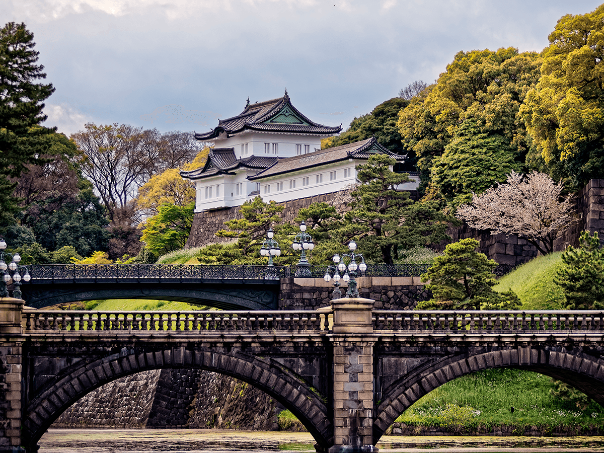
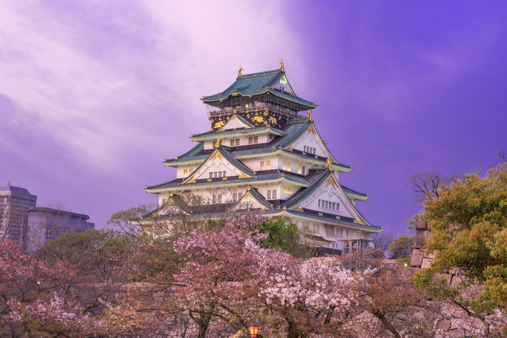

| Point of Interest |
About |
Picture |
| Mount Fuji |
Mount Fuji is located in Honshu and is 3 776 m tall.
The mountain is still active and is known as one of the
"Three Holy Mountains" in Japan. This popular tourist attraction
is known for its almost perfect cone shape and makes a great background
for pictures. It is the most beautiful during the cherry blossom season,
as the contrasting colours of the mountain in the background and pink petals
is splendid. This is a worthy attraction for all tourists.
|
 |
| Imperial Palace |
The Tokyo Imperial Palace is located in Tokyo and is
located on the historic site of the Edo Castle. The history
of this palace is splendid, as it was once destroyed during
World War Two, but rebuilt to look the same. Inside houses the Imperial
Family and adjacent to the palace is the East Gardens, which has
a beautiful Japanese style garden. |
 |
| Itsukushima Shrine |
The Itsukushima Shrine is located in Miyajima, the name Miyajima
literally meaning "shrine island" in Japanese. The shrine is known for
the infamous torii gate. The shrines and gate seem almost as if they are
floating during high tide, as both are built over the sea. |
 |
| Osaka Castle |
The Osaka Castle (known as Osakajo) is located in Osaka. Its rich history
like the Imperial Palace has struck the hearts of many tourists. This castle
has been rebuilt several times after several destructions from history and is now
a popular tourist attraction. It is well-known for its strong design. |
 |